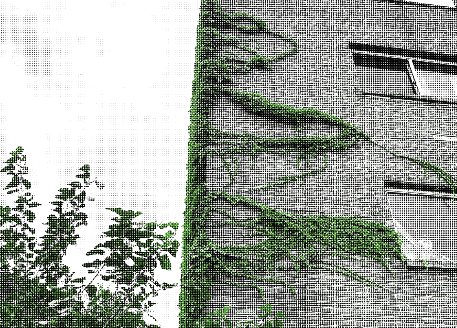
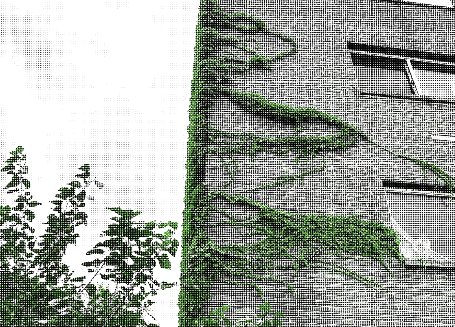
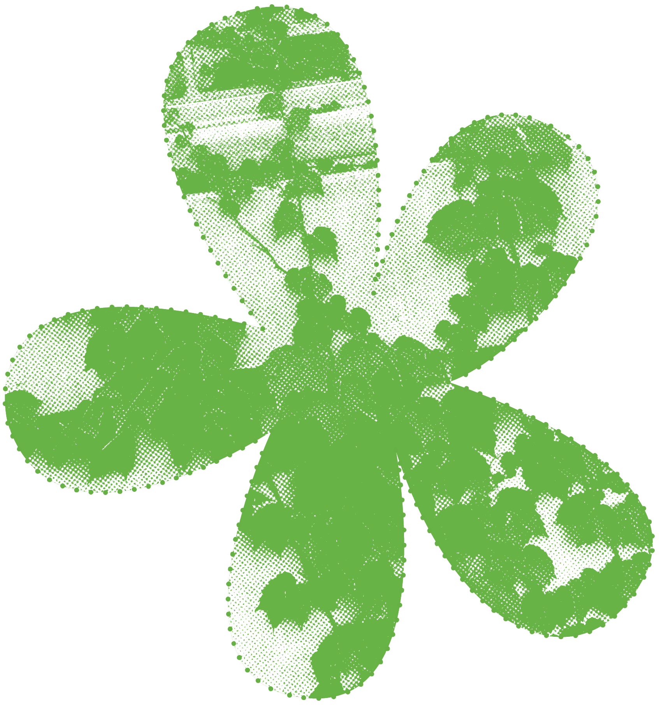
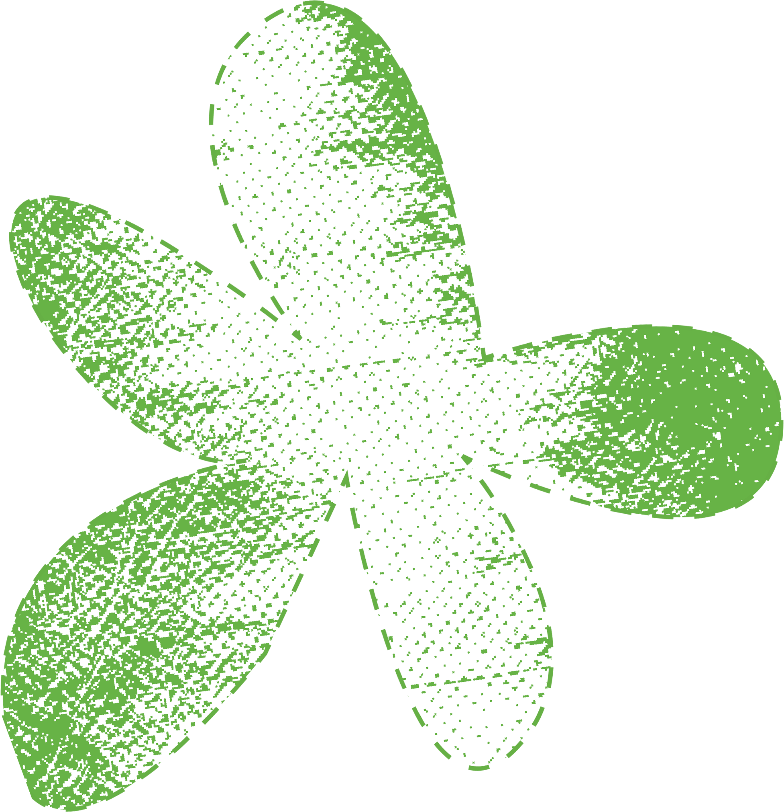
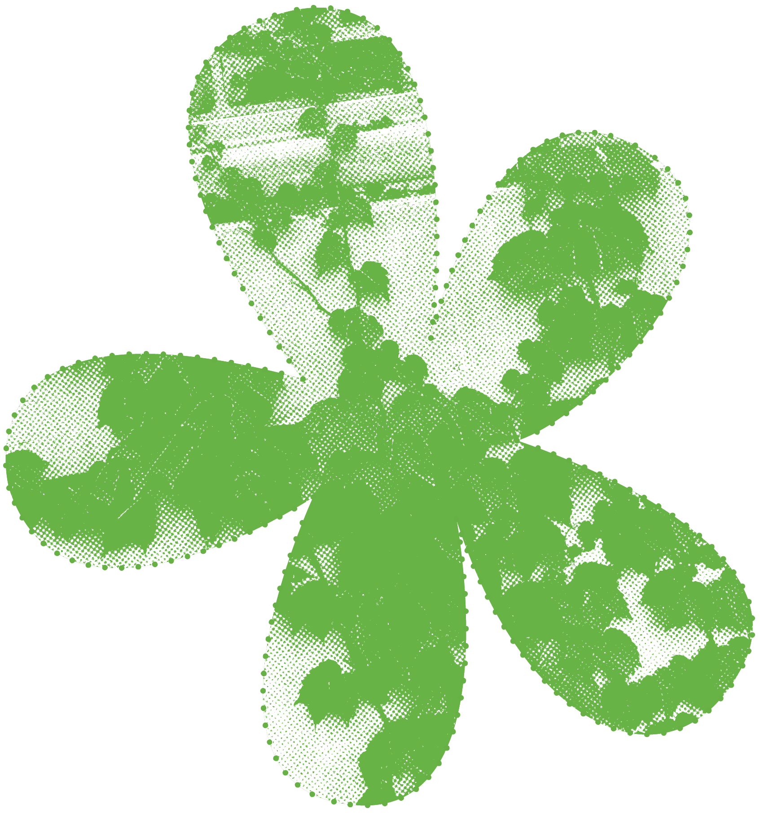
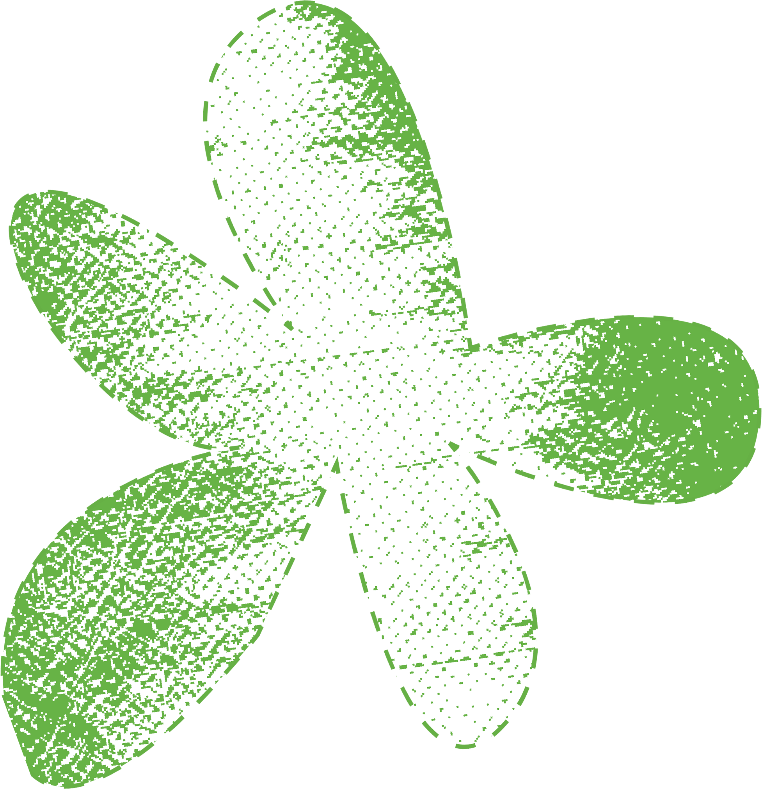
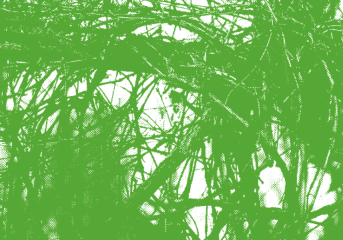
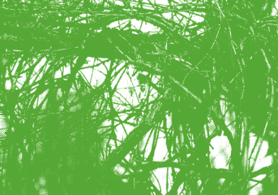

 





 


WHAT NEXT?
As we look to the future, the question remains: how will we choose to coexist with the unstoppable forces of nature?Will we continue to fight against it, attempting to control and shape the environment to suit our needs, or will we recognize the beauty and resilience that emerges when we step aside? The lessons of overgrowth and reclamation reveal that nature, even when damaged, has the power to regenerate if given the chance. Moving forward, the challenge is not only to mitigate our impact but to rethink our relationship with the world around us—one where we build with nature, rather than against it, embracing a more harmonious and sustainable future.